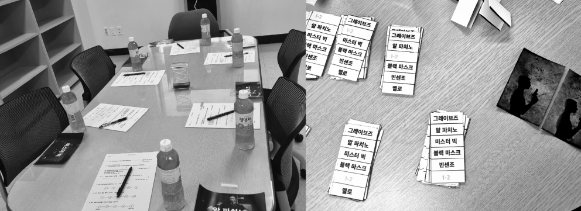
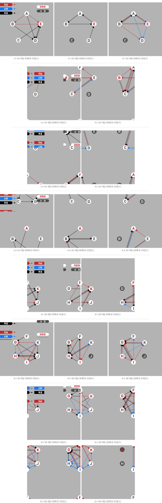
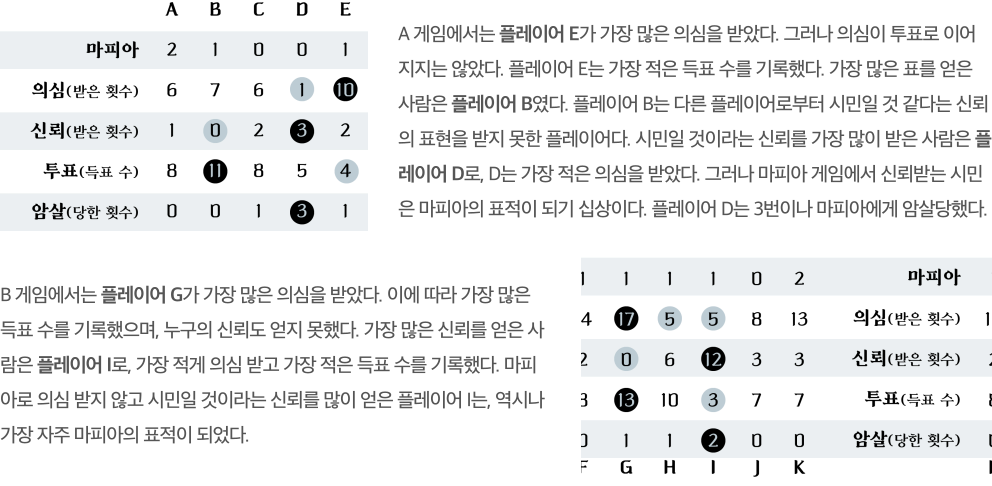
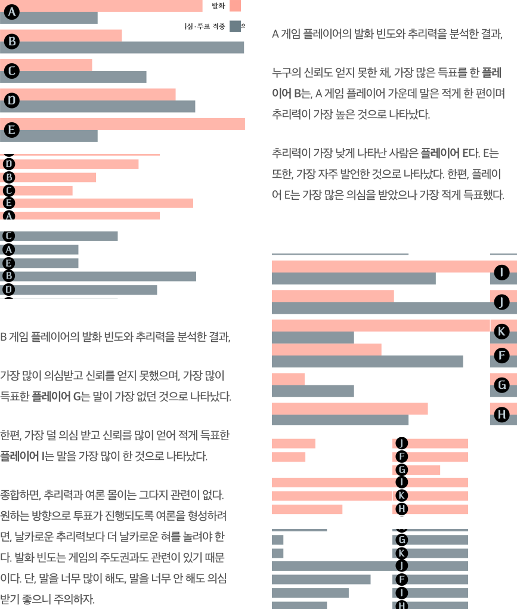
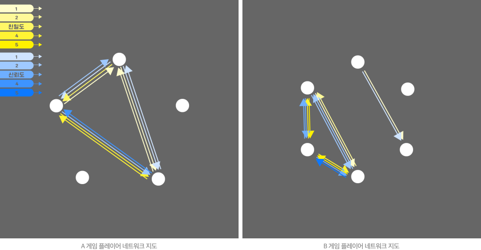

2022년 10월 5일과 6일, 광운대학교에서 호모 루덴스 주최 제1회 마피아 게임이 펼쳐졌다. 필자의 지인들과 보드게임 동아리 ‘보해미안’ 회원들, 학교 커뮤니티 에브리타임과 당근마켓의 월계동 동네생활 모임 홍보를 보고 모인 ‘마피아 게임 진심러’들이 호모 루덴스의 마피아 게임 취재를 위한, 마피아 게임에 협조해주었다.
고요한 오후 5시, 플레이어가 하나 둘 모여든다. 5일의 마피아 게임에는, 5명의 플레이어가 참가했다. 4명의 시민과 1명의 마피아가 섞여 낮에는 자유롭게 논의를 진행하고 의심스러운 사람을 투표로 처형, 밤에는 마피아가 시민을 선택해 처형하는 방식으로 진행했다. 구체적으로는, 낮부터 시작해 논의 후 죽일 사람을 공개 지목하고 최다득표자는 30초 최후의 변론 기회를 갖고 생사를 다시 공개적으로 결정하는 방식으로 진행했다. 투표를 하거나 하지 않는 것은 플레이어들의 자유로운 합의에 따랐다. 이날 마피아 게임은 1시간 10분 동안 4판 진행됐다.
6일에 모인 플레이어는 모두 6명이다. 하루 전보다 한 사람이 더 늘었다.
마피아 2명과 4명의 시민으로 구성했고 판마다 규칙을 추가하는 등 작은
변화를 주었다. 또한, 마피아 쪽지를 뽑은 요원에게 각각 다른 행동 미션을
주었다. 시민들은 마피아가 어떤 미션을 하는지는 알지 못하지만, 미션을
수행한다는 사실을 알고 있는 채로 게임을 진행한다. 낮의 논의는 약 6분 간
진행하고 준비된 투표 용지에 죽일 사람을 선택하는 비밀 투표로 진행했다.
최다득표자의 30초 변론 시간 이후 죽일지 살릴지 결정하는 것 또한, 비밀
투표로 진행했다.
이날의 두 번째 게임은, 마피아 2명 중 한 명이
낮에 투표로 죽지 않는다면 밤이 오지 않아 암살할 수 없도록 하는 규칙을
적용했다. 세 번째 게임에는, 시민 가운데 ‘의사’ 직업을 추가했고 매일 밤
마피아들이 암살하고 의사는 누군가를 선택하여 살릴 수 있도록 하는 규칙을
적용했다. 의사가 자힐(자신을 살리는 일)만을 반복하는 것을 피하고자
의사는 게임 중 단 한 번만 자신을 살릴 수 있도록 하는 규칙을 추가했다.
이날 마피아 게임은 1시간 20분 동안 3판 진행됐다.
다음은 마피아 게임의 진행 과정 및 결과를 기록하여 나타낸 네트워크 지도다. 라운드마다 의심과 신뢰가 향한 방향과, 투표한 사람을 확인할 수 있다. 여기에서 ‘의심’과 ‘신뢰’는, 묵시적 사항에 대한 필자의 짐작이 아닌 의심과 신뢰의 방향을 플레이어가 직접 발언하여 드러낸 내용만을 포함한다. A 게임은 손가락으로 상대를 지목하는 공개 투표, B 게임은 투표 용지에 죽일 사람을 선택하는 비밀 투표 방식이었다.
A 게임에는 플레이어 A~E가, B 게임에는 플레이어 F~K가 참가했다. 각 게임에서 어떤 플레이어가 가장 많은 의심을 사고 표를 얻었는지, 가장 많은 신뢰를 얻은 플레이어는 누구인지, 어떤 플레이어가 마피아로부터 암살당했는지 살펴보았다.
각 플레이어가 지닌 특성을, 발화 빈도와 추리력 측면에서 살펴보았다. 발화 빈도는 각 플레이어가 얼마나 자주 발언했는지 분석한 결과이며, 추리력은 각 플레이어가 마피아로 의심한 사람이 적중했을 때와 투표한 사람이 마피아가 맞았을 때를 합산한 결과에 따랐다.
다음은 플레이어 간 기존 친밀도와 신뢰도를 조사하여 나타낸 네트워크 지도다. 대부분 상대와 친밀한 관계일수록 상대를 신뢰하고 덜 친밀한 관계일수록 낮은 수준의 신뢰를 보이는 것으로 나타났다. 친밀하고 신뢰하는 정도가 상호 간 일치하는 경우도 있으나 일치하지 않는 모습도 포착되었다. 약하지만, 한쪽만 알고 있는 관계도 나타났다.
마피아 게임은 평소 우리의 일상과는 매우 떨어져 있다. 우리는 평소에 상대가 하는 말을 두고 진실인지 거짓인지 판단하는 일이 드물다. 그다지 깊은 생각 없이 누군가가 어떤 이야기를 하면 ‘그렇구나’ 하고 진실일 거라고, 사실 그런 생각조차 하지 않고 넘어가는 것이 대부분이다. 누군가를 의심하고, 한 마디 한 마디가 진실인지 거짓인지 판단하는 것 자체가 상당히 피곤한 일이다. 그래서 우리는 편리하게 상대를 믿어준다. 즉, 판단의 *휴리스틱으로 진실편향을 갖고 있다. 하지만, 마피아 게임에서는 복잡한 생각을 줄여주는 휴리스틱을 사용하지 않는다. 오히려 상대가 대부분 거짓을 말할 것이라고 생각하게 된다. 이 게임에 오래 빠져들게 되면 게임 종료 후에도, 적어도 일시적으로는 이 진실편향적인 사고, 판단의 휴리스틱을 제대로 작동시키지 못하고 반사적으로 대부분의 것을 의심하게 되리라.